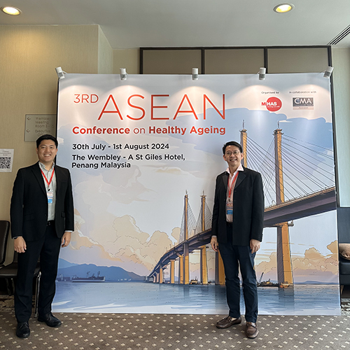
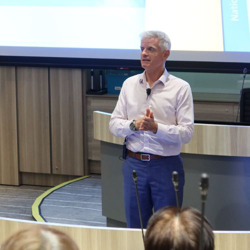
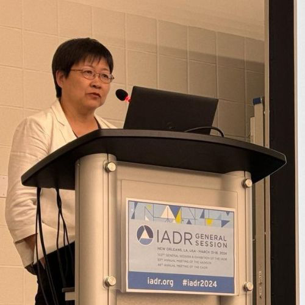

About Us
Welcome to the Faculty of Dentistry at the National University of Singapore, where we are dedicated to shaping the future of dental healthcare. Our faculty is renowned for its commitment to excellence in education, research, and clinical practice. We offer a comprehensive curriculum that combines innovative teaching methods with hands-on experience, ensuring our students are well-prepared to tackle the challenges of modern dentistry. With a strong emphasis on interdisciplinary collaboration and community engagement, we empower our students to make a positive impact on oral health both locally and globally. Join us in our mission to advance dental science and improve patient care through education, research, and compassionate practice.
Programmes

ASEAN Conference on Healthy Ageing |
Academy of Dental Materials Program |

Dentistry’s Vision for Tomorrow Program |

Championing Research and Collaboration Program |
Join us
Are you passionate about improving oral health and making a difference in people's lives? Join the Faculty of Dentistry at the National University of Singapore! Our dynamic program offers a unique blend of rigorous academic training, hands-on clinical experience, and cutting-edge research opportunities. Here, you will learn from distinguished faculty and collaborate with peers who share your commitment to excellence in dental care. Whether you aspire to become a skilled practitioner, a researcher, or an advocate for public health, NUS Dentistry provides the foundation you need to succeed. Be part of a community that inspires innovation and fosters a lifelong dedication to advancing the field of dentistry. Your journey starts here—come make an impact with us!